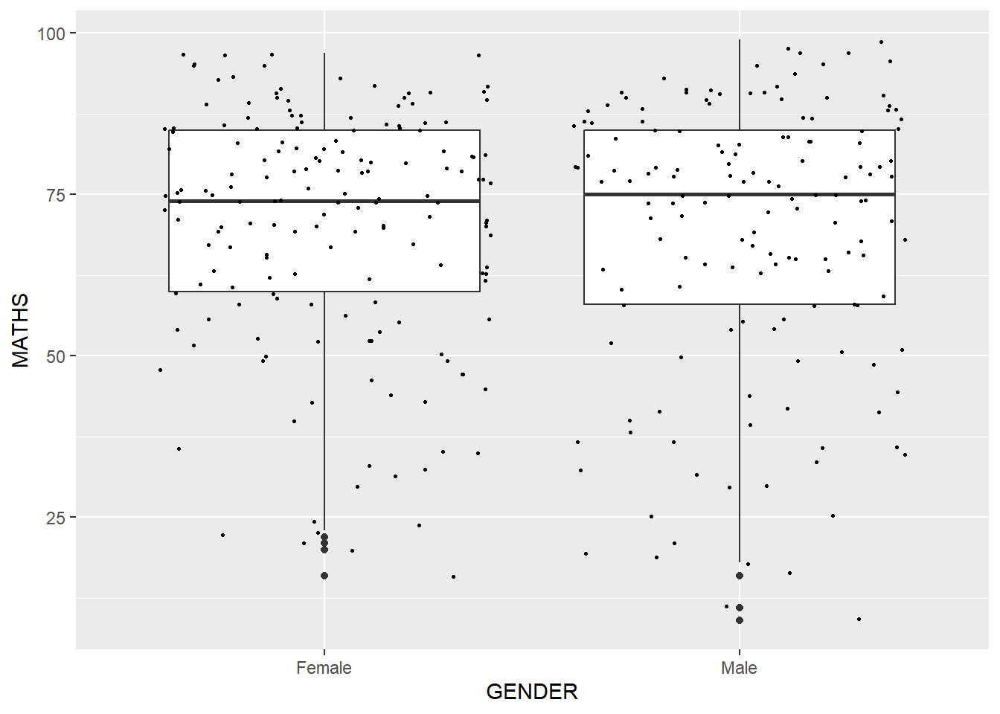
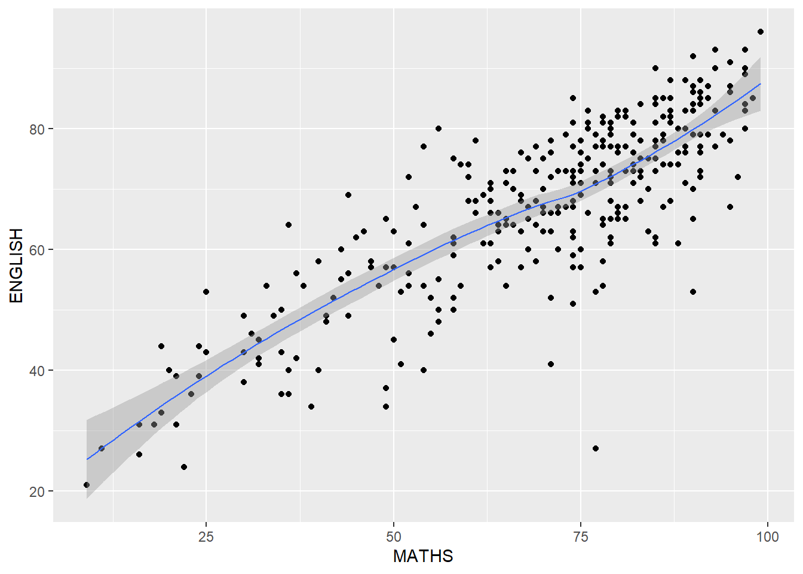

pacman::p_load(tidyverse)Hands-on Exercise 1 - A Layered Grammar of Graphics: ggplot2 methods
1.1 Learning Outcome
In this exercise, we learn the basic principles and essential components of ggplot2 to plot statistical graphics based on the principle of Layered Grammar of Graphics. The objective is to be able to apply essential graphical elements provided by ggplot2 to create elegant and yet functional statistical graphics.
1.2 Getting Started
1.2.1 Installing and Loading the required libraries
The code chunk below uses p_load( ) of pacman package to check if the tidyverse packages are installed in the computer. If they are, then they will be launched into the R environment.
1.2.2 Importing Data
We import exam_data.csv into R environment by using the read.csv( ) function and assign it to exam_data
exam_data <- read.csv('data/Exam_data.csv')In R, when we create objects, assignment statements etc, we use the form:
object_name <- valueWe can use glimpse( ) and summary( ) to quickly inspect exam_data.
glimpse(exam_data)Rows: 322
Columns: 7
$ ID <chr> "Student321", "Student305", "Student289", "Student227", "Stude…
$ CLASS <chr> "3I", "3I", "3H", "3F", "3I", "3I", "3I", "3I", "3I", "3H", "3…
$ GENDER <chr> "Male", "Female", "Male", "Male", "Male", "Female", "Male", "M…
$ RACE <chr> "Malay", "Malay", "Chinese", "Chinese", "Malay", "Malay", "Chi…
$ ENGLISH <int> 21, 24, 26, 27, 27, 31, 31, 31, 33, 34, 34, 36, 36, 36, 37, 38…
$ MATHS <int> 9, 22, 16, 77, 11, 16, 21, 18, 19, 49, 39, 35, 23, 36, 49, 30,…
$ SCIENCE <int> 15, 16, 16, 31, 25, 16, 25, 27, 15, 37, 42, 22, 32, 36, 35, 45…summary(exam_data) ID CLASS GENDER RACE
Length:322 Length:322 Length:322 Length:322
Class :character Class :character Class :character Class :character
Mode :character Mode :character Mode :character Mode :character
ENGLISH MATHS SCIENCE
Min. :21.00 Min. : 9.00 Min. :15.00
1st Qu.:59.00 1st Qu.:58.00 1st Qu.:49.25
Median :70.00 Median :74.00 Median :65.00
Mean :67.18 Mean :69.33 Mean :61.16
3rd Qu.:78.00 3rd Qu.:85.00 3rd Qu.:74.75
Max. :96.00 Max. :99.00 Max. :96.00 1.3 Introducing ggplot
ggplot2 is an R package for creating data-driven graphics based on The Grammar of Graphics. It is also part of the tidyverse family specially designed for visual exploration and communication.
For more information, please visit ggplot2 link
1.3.1 R Graphics VS ggplot
Lets compare how R Graphics, the core graphical functions of Base R and ggplot plot a simple histogram.
hist(exam_data$MATHS, col = '#5e82c9')ggplot(data=exam_data, aes(x = MATHS)) +
geom_histogram(bins=10,
boundary = 100,
color="black",
fill='#5e82c9') +
ggtitle("Distribution of Maths scores")Although the code is simpler when R Graphics is used, according to Hadley Wickham, “The transferrable skills from ggplot2 are not the idiosyncracies of plotting syntax, but a powerful way of thinking about visualisation, as a way of mapping between variables and the visual properties of geometric objects that you can perceive”.
1.4 Grammar of Graphics
Grammar of Graphics is a general scheme for data visualization which breaks up graphs into semantic components such as scales and layers. It defines the rules of structuring mathematical and aesthetic elements into a meaningful graph.
The two principles in Grammar of Graphics are:
Graphics = distinct layers of grammatical elements
Meaningful plots through aesthetic mapping
A good grammar of graphics will allow us to gain insight into the composition of complicated graphics, and reveal unexpected connections between seemingly different graphics (Cox 1978).
Figure below shows the seven grammars of ggplot2.

A short description of each building block are as follows:
Data: The dataset being plotted.
Aesthetics take attributes of the data and use them to influence visual characteristics, such as position, colours, size, shape, or transparency.
Geometrics: The visual elements used for our data, such as point, bar or line.
Facets split the data into subsets to create multiple variations of the same graph (paneling, multiple plots).
Statistics, statiscal transformations that summarise data (e.g. mean, confidence intervals).
Coordinate systems define the plane on which data are mapped on the graphic.
Themes modify all non-data components of a plot, such as main title, sub-title, y-aixs title, or legend background.
1.5 Essential Grammatical Elements in ggplot2: data
Let us call the ggplot( ) function using the code chunk below.
ggplot(data=exam_data)
Note
A blank canvas appears.
ggplot()initializes a ggplot object.The data argument defines the dataset to be used for plotting.
If the dataset is not already a data.frame, it will be converted to one by
fortify().
1.6 Essential Grammatical Elements in ggplot2: Aesthetic mappings
The aesthetic mappings take attributes of the data and use them to influence visual characteristics, such as position, colour, size, shape, or transparency. Each visual characteristic can thus encode an aspect of the data and be used to convey information.
The code below adds the aesthetic element into the plot.
ggplot(data=exam_data,
aes(x= MATHS))
Note
- ggplot includes the x-axis and the axis’s label.
1.7 Essential Grammatical Elements in ggplot2: geom
Geometric objects refer to the actual marks placed on the plot. A plot must contain at least one geometric object in order to have an output. There’s no limit on the number of geometric objects we can add.
+ is used to add additional geometric objects to the code chunk. The image below shows examples of some geometric objects.

For a complete list, please refer to here.
1.7.1 Geometric Objects: geom_bar()
The code chunk below plots a bar chart by using geom_bar( ).
aes(x=RACE) defines “RACE” as the x-axis.
ggplot(data=exam_data,
aes(x=RACE)) +
geom_bar()
1.7.2 Geometric Objects: geom_dotplot()
In a dot plot, the width of a dot corresponds to the bin width (or maximum width, depending on the binning algorithm), and dots are stacked, with each dot representing one observation.
Below, we use geom_dotplot() to plot a dot plot of math scores.
ggplot(data=exam_data,
aes(x = MATHS)) +
geom_dotplot(dotsize = 0.5)
Caution
The y scale may not be useful and could be misleading
We insert 2 additional arguments in geom_dotplot()
‘binwidth’ which refers to group ranges
‘dotsize’ which scales the size of the dots.
The function scale_y_continuous() is also added to turn off the y-axis by setting it to NULL.
ggplot(data=exam_data,
aes(x = MATHS)) +
geom_dotplot(binwidth=2.5,
dotsize = 0.5,
color="black",
fill='#5e82c9') +
scale_y_continuous(NULL,
breaks = NULL) 1.7.3 Geometric Objects: geom_histogram()
geom_histogram() is used to create a simple histogram by using values in MATHS field of exam_data.
ggplot(data=exam_data,
aes(x = MATHS)) +
geom_histogram() 
Note
The default bin is 30.
1.7.4 Modifying a geometric object by changing geom()
We modify the previous plot by using 3 arguments:-
bins to change the number of bins to 20,
fill to shade the histogram with another colour, and
color to change the outline colours of the bars
ggplot(data=exam_data,
aes(x= MATHS)) +
geom_histogram(bins=20,
color="black",
fill='#5e82c9') 1.7.5 Modifying a geometric object by changing aes()
The code below changes the interior colour of the histogram (i.e. fill) by using a sub-group of aes().
ggplot(data=exam_data,
aes(x= MATHS,
fill = GENDER)) +
geom_histogram(bins=20,
color="grey30")
Note
This approach can be used to change colour, fill and alpha of the geometric object.
1.7.6 Geometric Objects: geom_density()
geom-density() computes and plots kernel density estimate, which is a smoothed version of the histogram.
It is a useful alternative to the histogram for continuous data that comes from an underlying smooth distribution.
The code below plots the distribution of Maths scores in a kernel density estimate plot.
ggplot(data=exam_data,
aes(x = MATHS)) +
geom_density() 
The code below plots two kernel density lines by specifically using colour or fill arguments of aes()
ggplot(data=exam_data,
aes(x = MATHS,
colour = GENDER)) +
geom_density()
1.7.7 Geometric Objects: geom_boxplot
geom_boxplot() displays continuous value list. It enables us to visualize five statistics (the median, two hinges and two whiskers), and all other “outlying” points individually.
ggplot(data=exam_data,
aes(y = MATHS,
x= GENDER)) +
geom_boxplot() 
Notches are used to help visually assess whether the medians of distributions differ. If the notches do not overlap, it is more than likely that the medians are different.
The code below plots the distribution of Maths scores by gender in notched plots instead of boxplots.
ggplot(data=exam_data,
aes(y = MATHS,
x= GENDER)) +
geom_boxplot(notch=TRUE)
1.7.8 Geometric Objects: geom_violin()
Violin plots are a way of comparing multiple data distributions. With ordinary density curves, it is difficult to compare more than just a few distributions because the lines visually interfere with each other. With a violin plot, it’s easier to compare several distributions since they’re placed side by side.
The code below plots the distribution of Maths score by gender using violin plots.
ggplot(data=exam_data,
aes(y = MATHS,
x= GENDER)) +
geom_violin()
1.7.9 Geometric Objects: geom_point()
geom_point() is used to create scatter plots. The code below plots a scatter plot of Maths VS English grades of pupils.
ggplot(data=exam_data,
aes(x= MATHS,
y=ENGLISH)) +
geom_point() 
1.7.10 Combining geometric objects
The code below plots the data points on the boxplots by using both geom_boxplot() and geom_point().
ggplot(data=exam_data,
aes(y = MATHS,
x= GENDER)) +
geom_boxplot() +
geom_point(position="jitter",
size = 0.5) 
1.8 Essential Grammatical Elements in ggplot2: stat
The Statistics functions statistically transforms data, as a form of summary.
There are two ways to use these functions:
add a
stat_()function and override the default geom, oradd a
geom_()function and override the default stat.
1.8.1 Working with stat()
The boxplots below are incomplete because the means are not shown.
ggplot(data=exam_data,
aes(y = MATHS, x= GENDER)) +
geom_boxplot()
1.8.2 Working with stat - stat_summary()
The code below adds mean values by using stat_summary().
ggplot(data=exam_data,
aes(y = MATHS, x= GENDER)) +
geom_boxplot() +
stat_summary(geom = "point",
fun.y="mean",
colour ="blue",
size=4) 
1.8.3 Working with stat - geom() method
The code below adds mean values by using geom().
ggplot(data=exam_data,
aes(y = MATHS, x= GENDER)) +
geom_boxplot() +
geom_point(stat="summary",
fun.y="mean",
colour ="blue",
size=4) 
1.8.4 Adding a best fit curve on a scatterplot
The interpretability of scatterplots can be improved by adding a best fit curve.
In the code below, geom_smooth() is used to plot a best fit curve on the scatterplot.
ggplot(data=exam_data,
aes(x= MATHS, y=ENGLISH)) +
geom_point() +
geom_smooth(size=0.5)
Note
The default method used is loess
The default smoothing method can be overridden as shown below.
ggplot(data=exam_data,
aes(x= MATHS,
y=ENGLISH)) +
geom_point() +
geom_smooth(method=lm,
size=0.5)
1.9 Essential Grammatical Elements in ggplot2: Facets
Facetting generates small multiples (sometimes also called trellis plots), each displaying a different subset of the data.
Facets are an alternative to aesthetics for displaying additional discrete variables.
Note
ggplot2 supports two types of facets: facet_grid() and facet_wrap.
1.9.1 Working with facet_wrap()
The code below produces a 2D matrix of ‘MATHS’ histograms grouped by variable ‘CLASS’ using facet_wrap(~ CLASS) .
ggplot(data=exam_data,
aes(x= MATHS)) +
geom_histogram(bins=20) +
facet_wrap(~ CLASS)
1.9.2 facet_grid() function
facet_grid() forms a matrix of panels defined by row and column facetting variables.
It is most useful when we have two discrete variables, and all combinations of the variables exist in the data.
The code below plots a trellis plot using facet_grid().
ggplot(data=exam_data,
aes(x= MATHS)) +
geom_histogram(bins=20) +
facet_grid(~ CLASS)
1.10 Essential Grammatical Elements in ggplot2: Coordinates
The Coordinates functions map the position of objects onto the plane of the plot.
There are a number of different possible coordinate systems to use:
coord_cartesian( ) The default cartesian coordinate systems, where we specify x and y values (e.g. allows us to zoom in or out)
coord_flip( ) A cartesian system with the x and y flipped.
coord_fixed( ) A cartesian system with a “fixed” aspect ratio (e.g. 1.78 for a “widescreen” plot).
coord_quickmap( ) A coordinate system that approximates a good aspect ratio for maps.
1.10.1 Working with Coordinate
By default, bar charts in ggplot2 are vertical.
ggplot(data=exam_data,
aes(x=RACE)) +
geom_bar()
Using coord_flip() we can flip the vertical bar chart to a horizontal one.
ggplot(data=exam_data,
aes(x=RACE)) +
geom_bar() +
coord_flip()
1.10.2 Changing the x and y axis range
The scatterplot below is misleading as the x and y axes are not equal.
ggplot(data=exam_data,
aes(x= MATHS, y=ENGLISH)) +
geom_point() +
geom_smooth(method=lm, size=0.5)
Instead, we can set both the x and y axis ranges to 0-100.
ggplot(data=exam_data,
aes(x= MATHS, y=ENGLISH)) +
geom_point() +
geom_smooth(method=lm,
size=0.5) +
coord_cartesian(xlim=c(0,100),
ylim=c(0,100))
1.11 Essential Grammatical Elements in ggplot2: themes
Themes control elements of the graph which are not related to the data.
These include:
background colour
font size
grid lines
labels
The list of themes available can be found at this link.
1.11.1 Working with Themes
The code below plots a horizontal bar chart using theme_gray().
ggplot(data=exam_data,
aes(x=RACE)) +
geom_bar() +
coord_flip() +
theme_gray()
We can see the difference when we change the theme to theme_classic().
ggplot(data=exam_data,
aes(x=RACE)) +
geom_bar() +
coord_flip() +
theme_classic()
We can further customize the chart by adding additional arguments using theme().
ggplot(data = exam_data,
aes(x = RACE)) +
geom_bar() +
coord_flip() +
theme_minimal() +
theme(panel.background = element_rect(fill = "lightblue",
color = "white"))1.12 Plotting Practice
- Trellis Plot VS Box plot. Which graph provides more information visually?
ggplot(data=exam_data,
aes(x= MATHS)) +
geom_histogram(bins=20) +
facet_grid(~ CLASS)
ggplot(data = exam_data,
aes(y = MATHS,
x = CLASS)) +
geom_boxplot() +
stat_summary(geom = "point",
fun.y="mean",
colour ="red",
size=1.5)
Note
Trellis plots using histograms may not provide much information visually as compared to box plots.
The box plot enables to quickly see how each class compares to each other. We can quickly see the range of scores, median and mean scores for each class.
- What if we want to further compare the performance of the different genders in Maths?
ggplot(data = exam_data,
aes(y = MATHS,
x = CLASS)) +
geom_boxplot() +
stat_summary(geom = "point",
fun.y="mean",
colour ="red",
size=1) +
facet_wrap(~ GENDER)
Note
we use facet_wrap(~ GENDER)
- What if we want to compare both English and Math scores across the genders?
library(ggplot2)
library(gridExtra)
# Plot for Maths
plot_maths <- ggplot(data = exam_data, aes(x = CLASS, y = MATHS)) +
geom_boxplot() +
stat_summary(geom = "point", fun = mean, colour ="red", size=1) +
facet_wrap(~ GENDER) +
ggtitle("Maths Scores")
# Plot for English
plot_english <- ggplot(data = exam_data, aes(x = CLASS, y = ENGLISH)) +
geom_boxplot() +
stat_summary(geom = "point", fun = mean, colour ="blue", size=1) +
facet_wrap(~ GENDER) +
ggtitle("English Scores")
# Arranging plots one on top of the other
grid.arrange(plot_maths, plot_english, ncol = 1)
Note
In this approach, plot_maths and plot_english are two separate ggplot objects for Maths and English, respectively.
The grid.arrange() function then arranges these plots in a single column (ncol = 1) layout, effectively stacking them vertically.
- How can we improve on the basic histogram and add vertical lines representing the mean and median Maths scores?
ggplot(data = exam_data,
aes(x = MATHS)) +
geom_histogram(bins = 20,
color = "black",
fill = "green") +
geom_vline(aes(xintercept = mean(MATHS)),
col = 'red',
size = 1.0,
linetype = "dashed")+
geom_vline(aes(xintercept = median(MATHS)),
col = 'black',
size = 1.0,
linetype = "dashed")
Note
Inserting aes(xintercept = mean(MATHS)) and aes(xintercept = median(MATHS)) in both geom_vline() tells ggplot to draw vertical lines at the position on the x-axis that corresponds to the mean and median values.
Even if the underlying data in exam_data changes the mean and median lines will dynamically adjust accordingly.
More information on geom_vline() can be found here.
1.13 References
Kam, T.S. (2023). A Layered Grammar of Graphics: ggplot2 methods.
Hadley Wickham (2023) ggplot2: Elegant Graphics for Data Analysis. Online 3rd edition.
Winston Chang (2013) R Graphics Cookbook 2nd edition. Online version.
Healy, Kieran (2019) Data Visualization: A practical introduction. Online version